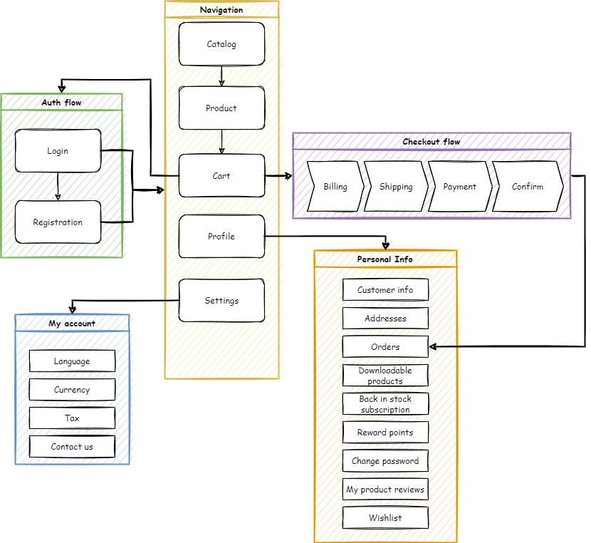
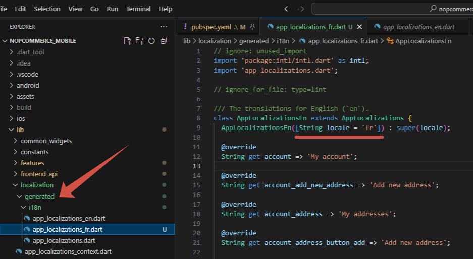
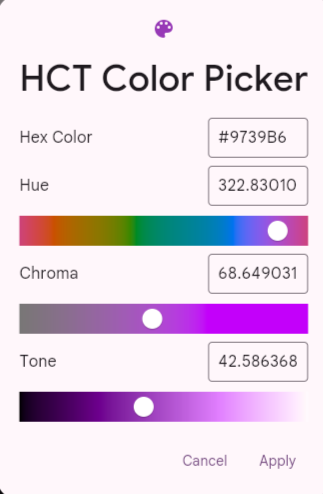
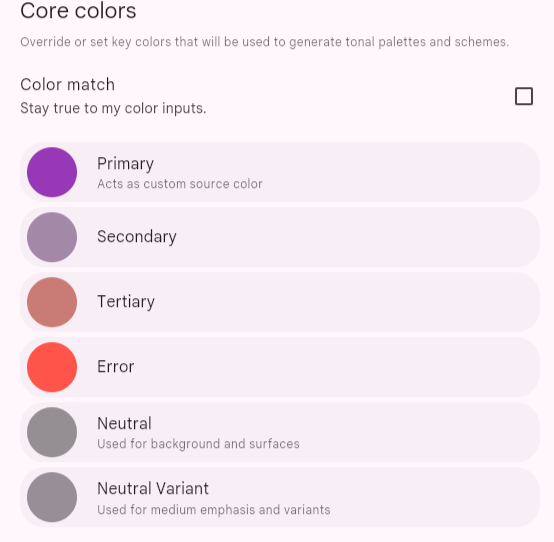
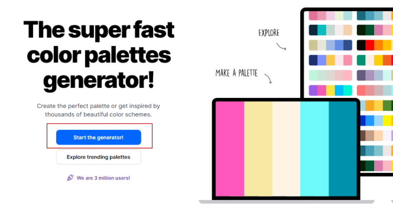
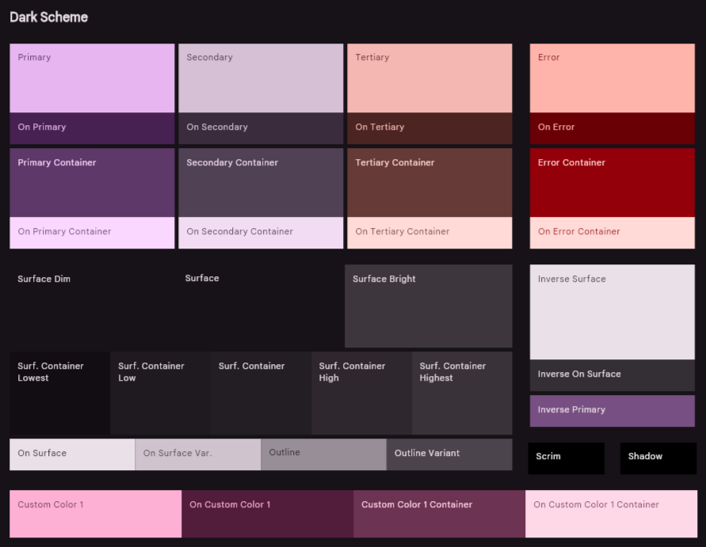
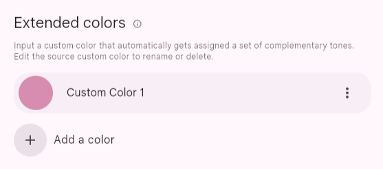
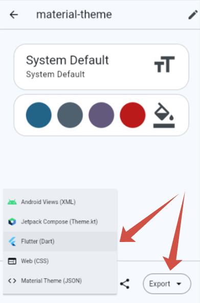

Mobile app documentation
Introduction
nopCommerce team provides a mobile application for iOS and Android. It will bring enormous value to your business. The mobile app is completely ready-to-go, so you can start selling your products and services straight away. Like the nopCommerce platform, the mobile app comes with the source code and offers unlimited customization options. What’s more, it can seamlessly adapt to your online store design and functionality. No coding or designing skills are required to integrate the app with your nopCommerce store, configure its content and features, publish it on the Google Play Store and App Store, and manage its workflow.
Here are some other significant features that will ensure efficient mobile eCommerce launching, customization, and maintenance:
Build with latest version of Flutter and Dart
Compatible with Android and iOS
Used Riverpod (state management) features
Easy to use UI and beautiful Material design 3
Token-Based Authentication
Internationalization support
Dark and Light theme support
Free icons
Setup
With the "nopCommerce mobile app" plugin, in addition to the "Web API Frontend" plugin, it is possible to manage some application settings.

The following functions are available:
- It is possible to transfer certain settings to the mobile application. This is done on purpose so as not to give access to absolutely all application settings. If you need additional settings, you must ensure that they are supported in the mobile application.
- Slider control on the main screen. You can also specify which products users will go to if they click on each slider image.
Visual Studio Code
The recommended development environment for Flutter is Android Studio. A convenient alternative is the VS Studio Code editor, below are the basic settings that help you comfortably work with the code, as well as a set of extensions necessary for development and debugging.
Editor settings
{
"[dart]": {
"editor.codeActionsOnSave": {
"source.fixAll": true
},
"editor.selectionHighlight": false,
"editor.suggest.snippetsPreventQuickSuggestions": false,
"editor.suggestSelection": "first",
"editor.tabCompletion": "onlySnippets",
"editor.wordBasedSuggestions": false,
},
"dart.warnWhenEditingFilesOutsideWorkspace": false,
"dart.renameFilesWithClasses": "prompt",
"editor.bracketPairColorization.enabled": true,
"editor.inlineSuggest.enabled": true,
"editor.formatOnSave": true,
"explorer.compactFolders": false,
"dart.debugExternalPackageLibraries": false,
"dart.debugSdkLibraries": false,
"editor.minimap.enabled": false
}
Extensions
For development, you will need to install the following extensions:
Name: Flutter
Id: Dart-Code.flutter
Description: Flutter support and debugger for Visual Studio Code.
Publisher: Dart Code
VS Marketplace Link: https://marketplace.visualstudio.com/items?itemName=Dart-Code.flutter
Name: Dart
Id: Dart-Code.dart-code
Description: Dart language support and debugger for Visual Studio Code.
Publisher: Dart Code
VS Marketplace Link: https://marketplace.visualstudio.com/items?itemName=Dart-Code.dart-code
Start development and customization
Open the source code from the archive that you will receive after purchasing the application in the Visual Studio Code editor.
Immediately after opening the project in the code editor, you will be prompted to download the included libraries. You can also do it yourself by running the following command in the terminal:
flutter pub get
Now you need to specify an endpoint to connect to the server to access the API. This setting is in the lib\constants\app_constants.dart file:
class AppConstants {
static const String storeUrl = 'https://yourstore.com';
}
Now everything is ready to run the application:
flutter run
Important
Make sure the paymentSettings.BypassPaymentMethodSelectionIfOnlyOne setting is disabled.
Another general recommendation for checkout flow settings: do not enable settings that disable or skip steps (for example, ordersettings.disablebillingaddresscheckoutstep). Such settings will have no effect in the mobile app.
Project structure
A mobile application developed on Flutter carries the functions of interacting with a public store using the Web API (Frontend). All the main processes of user interaction with the application are presented in the diagram below:

The approach that focuses on the fact that the functions of the application are root folders will be applied. And inside this folder, we describe the architectural layers inherent in this particular function in the form of subfolders. Thus, everything related to the functionality of interest to us is located in one folder, which greatly simplifies the understanding of the code.

Technology stack
Frameworks & Libraries used:
- Flutter SDK 3.35.1
- Dart SDK 3.9.0
- flutter_riverpod: 2.6.1
- go_router: 16.1.0
- flutter_secure_storage: 9.2.4
- dio: 5.9.0
Important
For correct operation of the application, it is recommended to use the package versions specified in the configuration.
App architecture
The application architecture is built according to generally accepted standards, described in the Android documentation. Since the project uses the Riverpod state management system, the architecture has been extended and looks like this:

Navigation - go_router
For navigation in the application, the go_router library is used. It is a declarative routing system built on top of the Flutter Router API.
The navigation map in the app looks like this:
├─/splash (SplashScreen)
└─ (ShellRoute)
├─/home
├─/catalog
│ ├─/catalog/category/:id (CategoryDetailsScreen)
│ ├─/catalog/manufacturer/:id (ManufacturerDetailsScreen)
│ ├─/catalog/vendor/:id (VendorDetailsScreen)
│ ├─/catalog/productsByTag/:id (ProductsByTagScreen)
│ ├─/catalog/productSearch/:q (ProductsSearchScreen)
│ └─/catalog/product/:id (ProductDetailsScreen)
│ ├─/catalog/product/:id/review (ProductReviewScreen)
│ └─/catalog/product/:id/addReview
├─/cart
│ └─/cart/checkout
└─/account
├─/account/logincheckout
├─/account/login
│ └─/account/login/forgotPassword (ForgotPasswordScreen)
├─/account/register
├─/account/settings
├─/account/contactUs
├─/account/wishlist (WishlistScreen)
├─/account/accountInfo (AccountInfoScreen)
├─/account/accountAddresses (AccountAddressesScreen)
│ └─/account/accountAddresses/createUpdateAddress/:id teAddressScreen)
├─/account/accountOrders (AccountOrdersScreen)
│ └─/account/accountOrders/orderDetails/:id (OrderDetailsScreen)
├─/account/accountDownloadableProducts nloadableProductsScreen)
├─/account/accountBackInStock (AccountBackInStockScreen)
├─/account/accountRewardPoints (AccountRewardPointsScreen)
├─/account/accountChangePassword (AccountChangePassword)
├─/account/accountProductReviews (AccountProductReviewsScreen)
├─/account/accountGdprTools (AccountGdprToolsScreen)
├─/account/accountReturnRequests (AccountReturnRequestsScreen)
└─/account/returnRequest/:id (ReturnRequestScreen)
Web API client generation
Istall the OpenAPI Generator (Requires Node.js)
To update the version of OpenAPI Generator, use the following command and select the latest stable version from the list provided.
openapi-generator-cli version-manager list
Create a file openapitools.json. Use the dart-dio generator.
{
"$schema": "node_modules/@openapitools/openapi-generator-cli/config.schema.json",
"spaces": 2,
"generator-cli": {
"version": "7.14.0",
"generators": {
"frontend": {
"input-spec": "swagger.json",
"generator-name": "dart-dio",
"output": "frontend_api",
"additionalProperties": {
"pubName": "frontend_api"
}
}
}
}
}
Note
To update the generator version, run the following command:
openapi-generator-cli version-manager list
It is necessary that the OpenAPI schema swagger.json be in the directory with the generator installed.
Call the following command to generate the client:
openapi-generator-cli generateThe standard openapi-generator will only generate base code that uses libraries that rely on Dart's own code generation. Therefore, after the completion of the base generation, it is necessary to start the Dart generator:
cd frontend_api flutter pub get dart run build_runner build -dAs a result, we get a ready-made package, which will be located where you specified in the configuration file or console command. It remains to include it in pubspec.yaml:
frontend_api: # <- nopCommerce generated api library path: lib/frontend_api
Localization
To localize the interface of the application itself, you need to place a file with locales in the \lib\localization folder. It is important that the file name is in the following format:
intl_{your_language_code_from_server}.arb
As a basis, you can take the intl_en.arb file already in the kit and translate its resources into the target language.
Run the following command in a terminal to generate the required resource files for localization.
flutter gen-l10n
You can make sure that all the necessary resources are generated correctly in the lib\localization\generated\i18n path.

Warning
Do not make any changes to this file as this part of the code is auto-generated. All localization changes should be made strictly in the intl_{your_language_code_from_server}.arb file located along the path \lib\localization.
Now, when switching the language in the application settings, the application interface will also be localized.
Important
The language code that will be embedded in the name of the localization file must match the one added on your server. Otherwise, the interface will be localized by the default locales (i.e. en).
Designing the user interface
To maintain a unified and consistent look across devices, we harnessed the potential of design tokens provided by Material 3. These tokens allow for storing styles, fonts, and animation values, enabling us to use the same style values in both design files and code.
Using tokens provides several advantages:
- Consistency: Tokens ensure consistent design across screens and components.
- Theming: Easily switch between light/dark/dynamic themes by swapping the ColorScheme or ThemeData.
- Maintainability: Change the look of the entire app from one place (no need to search and replace color codes).
- Design/Dev collaboration: Tokens serve as a bridge between Figma and Flutter.
Integrating Tokens from Design Tools
Material Theme Builder (MTB) is a designer/developer tool for creating Material Design 3 (M3) color & type tokens and exporting them as code (Flutter, Compose, Android XML, design tokens, etc.). It helps you produce coordinated light/dark ColorSchemes from a seed/brand color, preview components, and export ready-to-use artifacts for implementation.
Generate a color scheme
Open the Material Theme Builder.
Pick a seed / primary color
Enter a hex value, use the color picker, or use an eyedropper. The seed (primary) color is the single starting point from which tonal palettes are generated.

You can also enable dynamic color input (wallpaper/image) or import an image to extract colors — MTB will derive tonal palettes from that source.

Choose or tweak secondary / tertiary / error / neutral colors
MTB shows slots for common roles (secondary, tertiary, error, neutral, etc.). You can accept automatically-generated values or override specific role colors (enter hex values manually). The builder keeps role relationships consistent with M3 rules.

Here you need to select the base colors for the entire scheme. You can enter them manually, for example, if your brand colors are already defined. On the Dynamic panel, you can upload an image and extract colors from it. It is recommended to use the service https://coolors.co/ to generate harmonious colors.
Сlick Start the generator:

You can delete the extra blocks until only 3 remain, and then press the spacebar to generate variations.
Switch between Light and Dark previews
Toggle Light/Dark to immediately see both schemes;

MTB generates paired light/dark
ColorSchemes so contrast & visual hierarchy are preserved across brightness modes.
Preview components and surfaces
The builder has live previews (app bars, buttons, chips, cards, list items, navigation bars, dialogs). Use them to validate how your palette behaves on surfaces, text, icons, and interactive controls.

Use color-matching / harmonization
If you have brand colors that clash with generated tonal palettes, MTB offers color-matching or harmonization modes that nudge palettes to harmonize with brand hues while still following M3 tonal rules. This is useful when starting from multiple brand colors.

Typography
Select base font family. MTB can produce tokens for typography (weights, sizes, line heights) to accompany your color tokens.

Export
Choose the export format - Flutter (Dart), then export/download a ZIP with code artifacts and token files. For Flutter, the builder typically generates
theme.dartthat you can drop into your project.
Overview of the theme.dart file
Once you've created your color palette in Material Theme Builder and exported it, you'll get a theme.dart file. This file is the starting point for styling your app. Typically, its main content is two ColorScheme objects:
lightScheme: Defines a set of colors for your app's light theme (e.g. background, text, and accent colors in light mode).darkScheme: Defines the same colors for your dark theme.
These schemes are generated based on the seed color you choose and ensure a harmonious and consistent color combination throughout your app, following the principles of Material Design 3.
Integration theme.dart into the project
To keep your project structure organized, it is recommended to store theme-related files in a separate directory.
Peplace the generated ColorScheme objects from theme.dart into - lib/themes/material_theme.dart.
As your design system grows, you may need to introduce custom tokens (e.g., specific brand colors, semantic states). Use extensions. This code demonstrates which extension tokens are used in the mobile application.
ThemeData theme(ColorScheme colorScheme) => ThemeData(
useMaterial3: true,
brightness: colorScheme.brightness,
colorScheme: colorScheme,
textTheme: textTheme.apply(
bodyColor: colorScheme.onSurface,
displayColor: colorScheme.onSurface,
),
scaffoldBackgroundColor: colorScheme.surface,
canvasColor: colorScheme.surface,
// defailt extensions - BEGIN
extensions: [
CustomColors(
subTextColor: colorScheme.onSurfaceVariant,
ratingStarColor: colorScheme.secondary,
pictureIndicatorColor: colorScheme.surfaceContainerHighest,
pictureIndicatorCurrentColor: colorScheme.primary,
inStockColor: colorScheme.tertiary,
outOfStockColor: colorScheme.error,
),
],
// defailt extensions - END
);
Note
You can use the entire contents of the theme.dart file, but don't forget to include the default extensions that are available in the custom_color_scheme.dart file.
That’s it — restart the application and enjoy your new color scheme.
Publishing to the Google Play Store
The process for releasing your Flutter app on the Google Play Store involves preparing, building, and then uploading your application to the Google Play Console.
Key Steps:
- Sign Up for a Google Play Developer Account: You'll need to register for a developer account.
- Prepare the App for Release: This includes configuring the app's name, icon, and version number in the
pubspec.yamlfile and setting up necessary permissions. - Sign the Application: You must generate an upload keystore and sign your app with it to verify your identity.
- Build the Release Version: Use the
flutter build appbundlecommand to create an Android App Bundle (.aab) of your application. - Publish on the Google Play Console: Create a new app listing in your Play Console, fill out all the required store listing details (title, description, screenshots, privacy policy), and upload your .aab file for review.
Official Documentation: Build and release an Android app
Publishing to the Apple App Store
Deploying to the Apple App Store requires enrolling in the Apple Developer Program and using Xcode to manage the final steps of the process.
Key Steps:
- Enroll in the Apple Developer Program: This is a paid annual subscription that grants you access to publish on the App Store.
- Configure the Project in Xcode: Open the
iosfolder of your project in Xcode to set up the Bundle ID, version number, and code signing settings. - Create an App Store Connect Listing: Log in to App Store Connect to create a new app record. Here, you will enter all the metadata for your app, such as its name, description, screenshots, keywords, and privacy information.
- Build and Archive the App: Use Xcode to create a build archive (.ipa) of your application.
- Upload to App Store Connect: Upload the archived build using Xcode or the Transporter tool.
- Submit for Review: Once the build is processed and all metadata is complete, you can submit the app to Apple for review.
Official Documentation: Build and release an iOS app